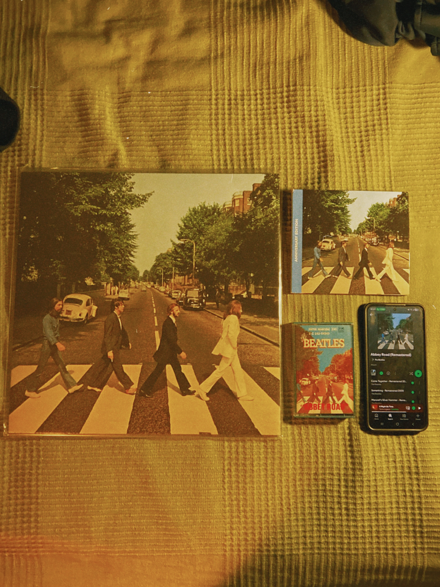
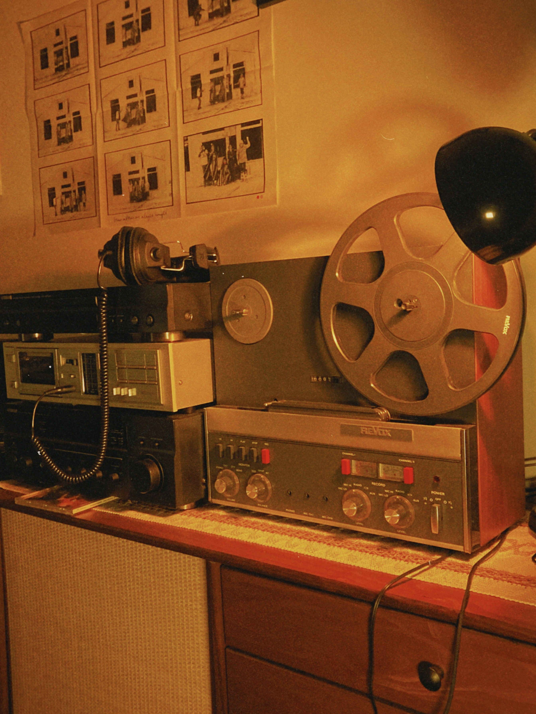
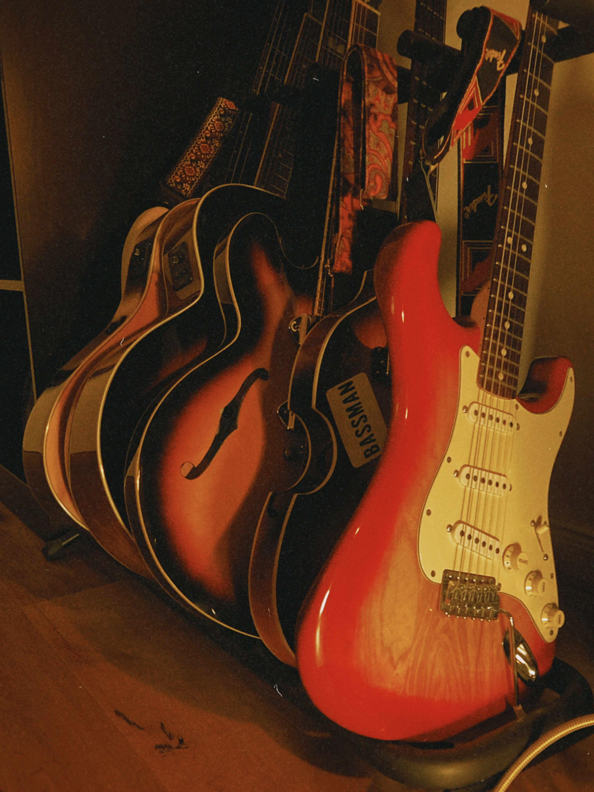
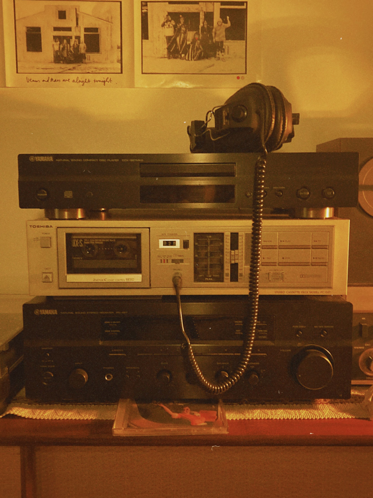

Tame Impala — The Slow Rush & Currents
The Beatles — Abbey Road (favorite of all time, played for over 120 hours)
Paul McCartney — McCartney
Wings — Band on the Run & One Hand Clapping
Daft Punk — Discovery
Stevie Wonder — Songs in the Key of Life
Pink Floyd — The Dark Side of the Moon
Coldplay — X&Y
Queen — A Day at the Races
Bilderbuch — Gelb ist das Feld



